Inauguración
El Teatro Velasco abre sus puertas. Entre sus primeras temporadas destacan obras del repertorio clásico y espectáculos de variedades.
Desde 1928
UN ESCENARIO · UNA CIUDAD · CASI UN SIGLO
Desde 1928, un espacio dedicado a las artes escénicas, la memoria y las historias que permanecen.
Conoce nuestra historiaEl proceso de digitalización de nuestro acervo histórico continúa. Algunos registros pueden encontrarse incompletos.
NUESTRA HISTORIA
El Teatro Velasco abrió sus puertas en 1928 como foro para compañías dramáticas, zarzuela, música y espectáculos de variedades. Durante sus primeras décadas recibió montajes clásicos y compañías itinerantes que hicieron del recinto un punto de encuentro cultural.
El Teatro Velasco abre sus puertas. Entre sus primeras temporadas destacan obras del repertorio clásico y espectáculos de variedades.
Una producción de la tragedia de William Shakespeare se convierte en uno de los primeros éxitos dramáticos del recinto.
La obra se incorpora a las temporadas de noviembre y se vuelve una tradición recurrente del Velasco.
La programación amplía su repertorio con dramaturgia española contemporánea.
Una temporada especial celebra trece años de actividad ininterrumpida.
Varias funciones son suspendidas y el recinto cierra temporalmente por trabajos de mantenimiento.
El Teatro Velasco reabre bajo una nueva administración. Ese año comienza una etapa que marcaría profundamente la historia del recinto.
ARCHIVO FOTOGRÁFICO
Selección de fotografías, carteles y materiales conservados en el acervo del Teatro Velasco. Las fichas respetan la catalogación disponible.
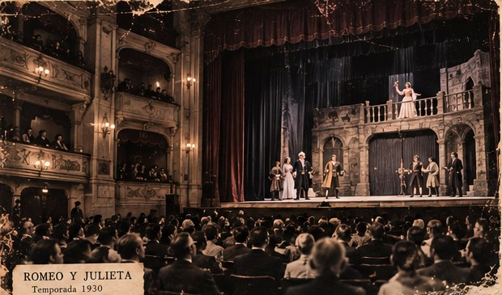
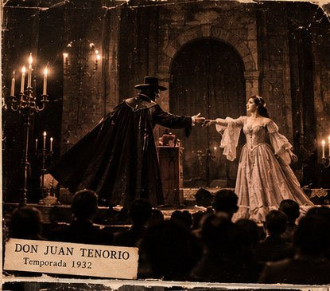
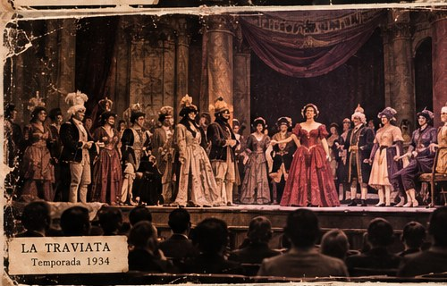
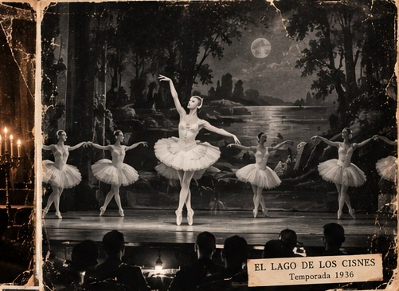
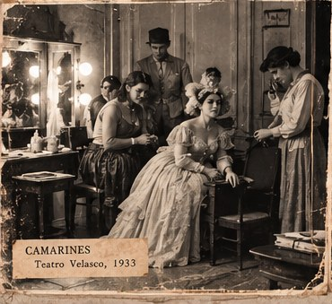
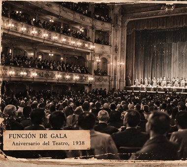
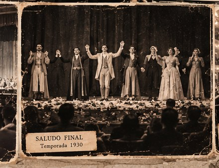
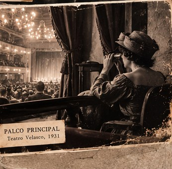
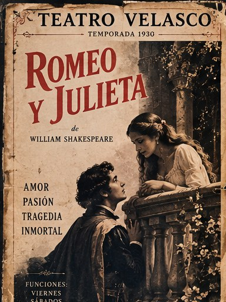
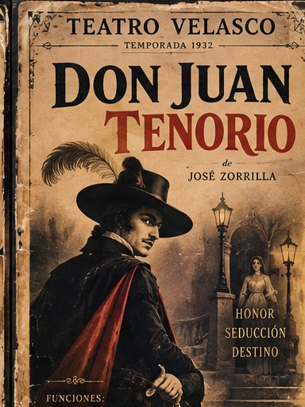
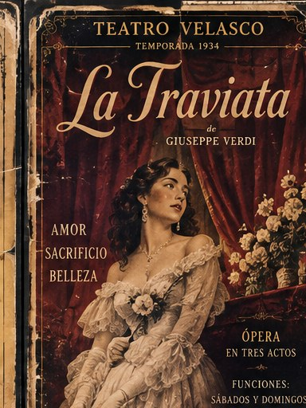
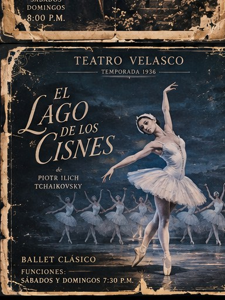
Digitalización del Archivo Fotográfico Velasco. Algunas fechas y créditos continúan en proceso de verificación.
ACERVO DIGITAL
Programas, fotografías y documentos conservados por el Teatro Velasco. Parte del material original permanece en proceso de catalogación.
Nota de catalogación: el inventario correspondiente al periodo diciembre de 1946–enero de 1947 presenta inconsistencias.
CARTELERA
Próximamente
Información de funciones y acceso disponible próximamente.
CONTACTO
Este sitio forma parte del archivo y experiencia narrativa del Teatro Velasco.
Consultas de archivo: archivo@teatrovelasco.example